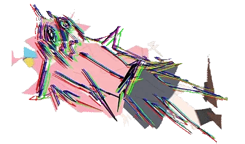

Tuoer_sama
高二生 | 节奏游戏玩家
Python 代码缝合怪
QQ：3068842935
微信：Tuoer_sama
邮件：3068842935@qq.com
关于我 / About Me
你好！这里是 Tuoer_sama 的专属空间。
我是一个热衷于折腾各种稀奇古怪东西的高二学生。平时喜欢推图、打打音游、写写 Python 自动化脚本，偶尔也搞搞像素画和拼豆。
✨ 技能点 & 爱好：
osu!
Muse Dash
像素艺术
拼豆图纸制作
Python & Batch
我的追番列表
Click!
🎸 孤独摇滚！
点击进入专属画廊！波奇酱，我的超人！

日常 (Nichijou)
所度过的每一个日常，也许就是奇迹。

来点兔子吗？
猛男必看！治愈系天花板，智乃可爱捏。
幻想乡漫游指南
🌸
西行寺幽幽子
华胥的亡灵。吃货属性拉满。
🔥
藤原妹红
不老不死的蓬莱人，傲娇属性。
指尖跳动与像素魔法
🎵 节奏游戏档案
- 主攻项目： osu! / Muse Dash
- 现役外设： Wacom CTL-472
🎨 手工与代码产出
- 拼豆艺术： 常用像素生成器图纸。
- 实用脚本： 各种 Python 自动化、M4A转MP3。
孤独摇滚！(Bocchi the Rock!)
喜多郁代
主唱/吉他
山田凉
贝斯/吃草怪
伊地知虹夏
鼓手/大天使
后藤一里
主音吉他/社恐
看着波奇酱从壁橱里那个只能对着镜头弹琴的少女，一步步走向舞台，那种 “虽然害怕，但还是要弹下去” 的勇气，真的超级燃！




结束乐队 必听曲目
青春情结 (青春コンプレックス)
OP / Vocal: 喜多郁代
distortion!!
ED1 / Vocal: 喜多郁代
Karokara (カラカラ)
ED2 / Vocal: 山田凉
Nanimonone (なにが悪い)
ED3 / Vocal: 伊地知虹夏
那个乐队 (あのバンド)
第8话插曲 / Vocal: 喜多郁代
滚动的岩石，凌晨的彗星
翻唱 / Vocal: 后藤一里